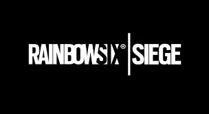

Tom Clancy's Rainbow Six: Siege es un videojuego de disparos táctico en línea desarrollado por Ubisoft Montreal y distribuidor por Ubisoft. Salió a la venta en todo el mundo para Microsoft Windows, PlayStation 4 y Xbox One el 1 de diciembre de 2015 y para PlayStation 5 y Xbox Series X|S el 1 de diciembre de 2020. El juego pone mucho énfasis en la destrucción del entorno y en la cooperación entre los jugadores. Cada jugador asume el control de un atacante o un defensor en diferentes modos de juego, como rescatar a un rehén, desactivar una bomba y tomar el control de un objetivo dentro de una habitación. El título no tiene campaña, pero cuenta con una serie de misiones cortas, fuera de línea, llamadas "situaciones", que pueden jugarse en solitario. Estas misiones tienen una narrativa suelta, centrada en el entrenamiento de los reclutas para prepararlos para futuros encuentros con las "Máscaras Blancas", un grupo terrorista que amenaza la seguridad del mundo.
Es un gran sucesor
Siege es una entrada en la serie Tom Clancy's Rainbow Six y el sucesor de Tom Clancy's Rainbow 6: Patriots, un videojuego de disparos táctico que tenía un mayor enfoque en la narrativa. Después de que Patriots fuera cancelado por su aspecto técnico, Ubisoft decidió reiniciar la franquicia. El equipo evaluó el núcleo de la serie Rainbow Six y creyó que dejar que los jugadores se hicieran pasar por las principales unidades antiterroristas de todo el mundo era lo más adecuado para el juego. Para representar de la mejor forma las situaciones reales, Ubisoft consultó a unidades antiterroristas reales y se fijó en ejemplos de operaciones en la vida real. Con AnvilNext 2.0, el juego también utiliza la tecnología RealBlast de Ubisoft para crear entornos destructibles.

Jugabilidad
El juego consiste en partidas de equipos de cinco atacantes contra cinco defensores. Los defensores deben defender un objetivo dentro de una estructura, ya sea un rehén, dos bombas o un contenedor biológico. Si logran defender al objetivo con éxito o eliminan a todos los atacantes, ganan la ronda. Los atacantes deben rescatar, desactivar, o asegurar al objetivo (respectivamente), o eliminar a los defensores para ganar.
Modos de juego
Rehén: los atacantes deben localizar y extraer a un rehén de un edificio, mientras los defensores deben evitarlo.
Bomba: los atacantes deben localizar una de dos bombas y plantar o activar un sedax (Sistema Experto en Desactivación de Artefactos Explosivos). Los atacantes ganan la ronda si logran desarmar una bomba o si eliminan al equipo enemigo.
Asegurar la zona: los atacantes deben localizar una zona donde se encuentra un contenedor de material biológico peligroso y deben asegurar el área; para ello, deben permanecer en la sala durante 10 segundos consecutivos sin ningún defensor en el área.
A veces hay eventos como Six Invitational o Outbreak que por lo general añaden otro modo con diferente jugabilidad
Deathmatch: Es un modo todos contra todos, el que primero llegue a la marca de puntos, gana.